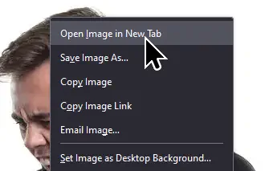

This is my third website besides theki.club and theki.noncities. Whereas the first one is dedicated to whatever and the second one is dedicated to older browsers, this will be dedicated to sharing my projects and presenting them as simply and as straightforward as possible. That means that all I have to do to present you stuff is to write a couple of Markdown files and link them together, a bit like the Gemini protocol.
That's not to say I can't still use HTML:
But writing ordinary text is a lot easier.
# This is much easier
<h1>than this</h1>
N/A
Via Gulp. This kind of website could easily be created after only an hour or two with tinkering with the thing, but what gives? Gulp is beautiful, I want to use it.
There are three important directories involved: the root directory, src, and md-themes. The src directory holds the Markdown files. The one you're viewing right now is index.md. These are taken into a Markdown renderer (Marked) and converted into plain HTML. Then, using gulp-header, I add some lines of code to the top of the Markdown files:
<!-- inject:css -->
<!-- endinject -->
<h1>converted markdown goes here...</h1>
After that, gulp-inject is used to take the theme(s) from md-themes and insert them inbetween those two comments. Finally the finished file is exported to the root directory. Hooray! We're done! In fact, the entire chain is finished now. We can, like, drink a cup of water while we wait for the next time gulp is run.
Have a looksie at this image:
If all goes well, you should see a man screaming at his computational device. Now, after appropriately setting it as your desktop wallpaper, open it in a new tab:

Wow! That image is in a .WebP format! And so is the one you just saw! How did you do it?
Well, there's an old place where JPEGs and PNGs go called the nonop folder. It hides inside of the img directory and houses all of the unoptimised images, but not for long. See, with the magical press of a button via Gulp I can convert them into WebP! What's that. Oh, the unoptimised images are gone. They are't needed anymore. I don't need them anymore. They're useless to me now.
It's a simple chain. Images from the nonop folder are collected and passed into a WebP converter, then they are exported into the root of the img folder. Finally, the nonop images are deleted. This saves unnecessary storage space and execution time since we don't have to re-convert all the images we've already optimised.